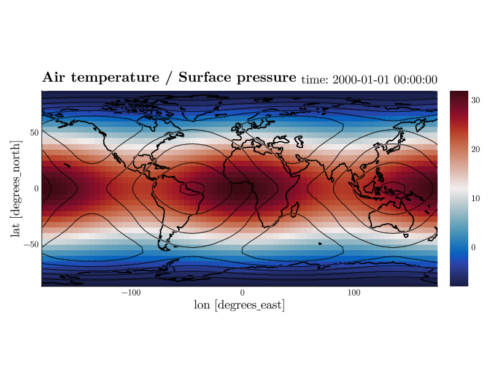
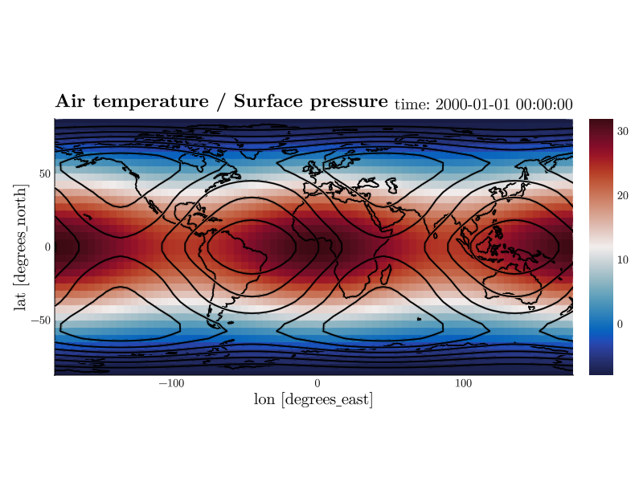
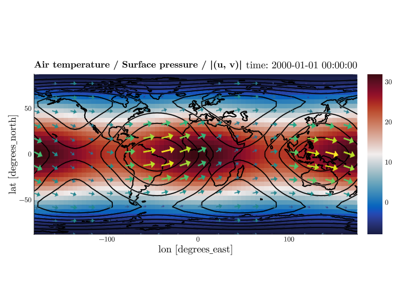
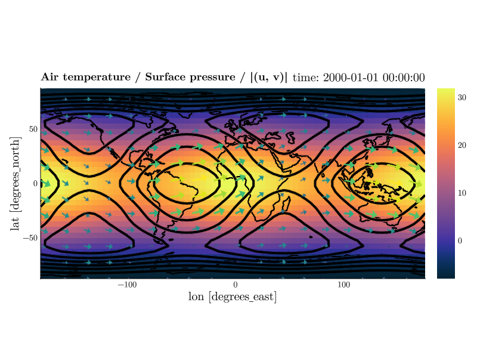

Overlaying Fields
A figure normally draws one field. It can draw several, stacked on the same axis: a temperature heatmap with pressure contours over it, arrows of the wind on top of that. Each field is a layer. The first one is the base and sets the terms, the axes and the labels and the colorbar, and every layer is drawn in front of it.
Layers are a prompt and command line feature. The menu window has no control for them.
Adding a layer
over names the variable of the second layer. It is v for that layer, and everything else works the same way: put over in front of the command you would give the base field.
CDFViewer> v temperature
[ Info: Selected: temperature
CDFViewer> x lon
[ Info: Selected: lon
CDFViewer> y lat
[ Info: Selected: lat
CDFViewer> p heatmap
[ Info: Selected: heatmap
CDFViewer> over pressure
[ Info: over: pressure (contour)
Over a flat 2D base the new layer starts as a contour, since a second heatmap would simply hide the first. over.p picks a different type.
An overlay contour is drawn in the theme's text color, black on a light theme and white on a dark one. The base layer owns the colors and the colorbar, and a second colormap would only fight the first: pale lines disappear into the pale band of the field underneath. over.colormap= colors the lines by level again, over.color= paints them all one color, and the rest of the line is styled as usual.
CDFViewer> over.linewidth=2, over.levels=6
┌ Info: Current plot settings:
│ over.linewidth => 2
└ over.levels => 6
A third layer is over2, a fourth over3, and so on. Vector plots are layers like any other, so a layer can name two variables.
CDFViewer> over2 u,v
[ Info: over2: u, v (quiver)
CDFViewer> over2.p quiver
[ Info: over2: u, v (quiver)
CDFViewer> over2.arrows=(20, 14)
┌ Info: Current plot settings:
│ over.linewidth => 2
│ over.levels => 6
└ over2.arrows => (20, 14)
over off takes a layer away again.
| Command | Effect |
|---|---|
over pressure | draw pressure as the second layer |
over u,v | both components of a vector layer |
over.v pressure | the same, spelled out |
over.p contour | plot type of the second layer |
over off | remove the second layer |
over | report what the second layer draws |
over2 … | the same for the third layer |
off is checked before the dataset's variables, so a variable really called off needs the spelled-out over.v off.
Removing a layer renumbers the ones above it: with three layers, over off leaves the former over2 as the new over. Its keywords are renamed with it.
Keywords per layer
An unprefixed keyword works exactly as it always did: it reaches everything that accepts it. colorrange=(-20, 30) therefore pins both plots and the colorbar at once, while levels=10 only reaches the layer that has levels.
Prefix a keyword to aim it at one layer. over. addresses the second layer, over2. the third, and base. the first. Both forms can name one property: levels=10, over.levels=6 draws the overlay with six levels, because the line is read in order. It stays that way when a keyword in it changes, so setting levels=12 later still leaves the overlay at six.
CDFViewer> base.colormap=:thermal, over.linewidth=4
┌ Info: Current plot settings:
│ over.linewidth => 4
│ over.levels => 6
│ over2.arrows => (20, 14)
└ base.colormap => :thermal
get, del, and conf take the prefixed names as written. get on a bare name reports the base layer, so ask for get over.colormap when you mean the overlay. kwargs plot lists every layer's keywords, the overlays' already carrying their prefix.
CDFViewer> get over.linewidth
[ Info: over.linewidth => 4
CDFViewer> conf
┌ Info: Current plot settings:
│ over.linewidth => 4
│ over.levels => 6
│ over2.arrows => (20, 14)
└ base.colormap => :thermalWhat the layers share
The first layer is authoritative. It fixes the axes, the labels, and the kind of plot the others have to fit into, and it owns the one colorbar the figure has. An overlay brings its own field and its own colors, nothing else.
x, y, and z say what the axis is, so they are set once for the whole figure. An overlay variable has to span every drawn dimension. It does not have to span the sliced ones: the pressure above is a lon/lat field with no time dimension at all, and it sits happily under a temperature field that has one; it simply does not move during playback. The slice itself is shared as well, so every layer sits at the same index of every dimension.
A layer can only be drawn with a type that needs the same axis and the same number of dimensions as the base. That leaves four groups, and a layer joins the base's own.
| Group | Plot types |
|---|---|
| flat, 2D field | heatmap, contour, contourf, quiver, streamplot |
| 3D, 2D field | surface, wireframe |
| flat, 1D field | line, scatter |
| 3D, 3D field | volume, contour3d |
over.p refuses anything from another group and says what is available. Layers can also stop fitting on their own: a new base variable may move the plot onto axes an overlay does not span, and a new base plot type may move it onto a different kind of axis. Either way the layers that no longer fit are dropped, with a warning naming them.
The title names every layer, joined by /. With more than one layer the units are left off, so three names still fit on the line; the colorbar still carries the base layer's own unit. An explicit title= overrides the whole thing.
Playback runs along any dimension any layer has, the options being the union over the layers, and a layer without the playback dimension stays where it is while the others move. The color range is pinned per layer, each from its own field (see Stable colors during playback). Scanning two fields costs twice as much, and the automatic size limit is spent across all of them together, so a second layer cannot quietly double the wait.
From the command line
--over and --over-plot are repeatable and matched by position: the n-th variable is drawn with the n-th plot type.
cdfviewer demo.nc -v temperature -x lon -y lat -p heatmap \
--over=pressure --over-plot=contour \
--over='u,v' --over-plot=quiver \
--kwargs='over.linewidth=2, over2.arrows=(20, 14)'export writes the flags back out, so a session built at the prompt reproduces from the command line.
CDFViewer> export
┌ Info: Commandline Arguments:
└ -vtemperature -xlon -ylat -pheatmap --over=pressure --over-plot=contour --over=u,v --over-plot=quiver -atime --kwargs='over.linewidth=4, over.levels=6, over2.arrows=(20, 14), base.colormap=:thermal, limits=(-180.0, 175.0, -87.5, 87.5)'